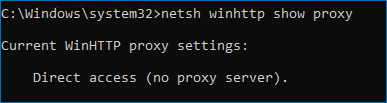
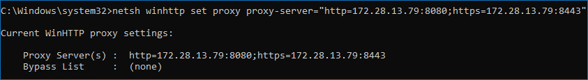
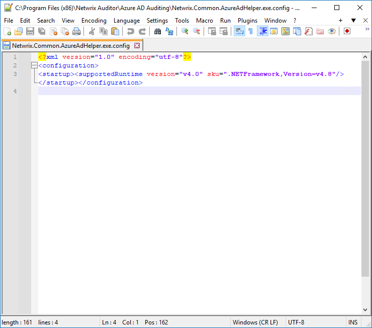
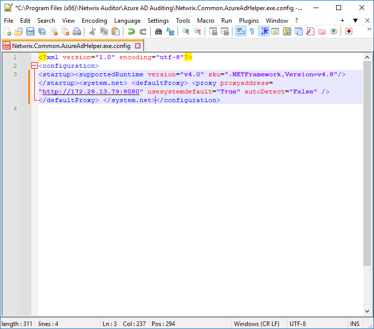

Question
How to configure Microsoft 365 (Office 365) data sources to use proxy server settings?
Answer
Exchange Online
Exchange Online relies on PowerShell gathering proxy settings from the network adapter. Browser proxy settings in Windows are not propagated to the network adapter by default. Refer to the following steps to set up proxy settings for Exchange Online:
-
In elevated Command Prompt line, check the network adapter settings:
netsh winhttp show proxy -
If the system prompts Direct settings, configure the network adapter to use the correct proxy settings:
netsh winhttp set proxy proxy-server="http=***.***.***.***:port;https=***.***.***.***:port"Replace the proxy server settings in the line with your actual settings.

Microsoft Entra ID (formerly Azure AD)
To use proxy server settings for the Microsoft Entra ID audit, the following files should be edited:
-
Netwrix.Common.AzureAdHelper.exe.config -
Netwrix.O365.AzureAdCollector.exe.config -
Netwrix.O365.AzureAdDiffQueryCollector.exe.config -
Netwrix.O365.AzureADDumper.exe.config -
Netwrix.O365.AzureAdManagementApiCollector.exe.config -
Netwrix.O365.AzureAdReporter.exe.config
Add the following line at the end of each file before the </configuration> tag:
<system.net> <defaultProxy> <proxy proxyaddress="***.***.***.***:port" usesystemdefault="True" autoDetect="False" /> </defaultProxy> </system.net>| Before editing | After editing |
|---|---|
| <?xml version="1.0" encoding="utf-8" ?> <configuration> <startup useLegacyV2RuntimeActivationPolicy="true"> <supportedRuntime version="v4.0.30319"/> <supportedRuntime version="v2.0.50727"/> </startup> </configuration> | <?xml version="1.0" encoding="utf-8" ?> <configuration> <startup useLegacyV2RuntimeActivationPolicy="true"> <supportedRuntime version="v4.0.30319"/> <supportedRuntime version="v2.0.50727"/> </startup> <system.net> <defaultProxy> <proxy proxyaddress="***.***.***.***:port" usesystemdefault="True" autoDetect="False" /> </defaultProxy> </system.net> </configuration> |
|  |  |
Replace ***.***.***.***:port with your actual proxy settings.
SharePoint Online
To use proxy server settings for the SharePoint Online audit, the following files should be edited:
-
Netwrix.Common.AzureAdHelper.exe.config -
SpaOnlineHost.exe.config
Add the following line at the end of each file before the </configuration> tag:
<system.net> <defaultProxy> <proxy proxyaddress="***.***.***.***:port" usesystemdefault="True" autoDetect="False" /> </defaultProxy> </system.net>
Replace proxyaddress="***.***.***.***:port" with your actual proxy
settings.
Microsoft Teams
To use proxy server settings for the Teams audit, set up both Microsoft Entra ID and SharePoint Online settings.